Misc attributes
Intermediate Artist Programmer
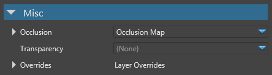
Occlusion
Under the Occlusion properties, you can set an occlusion map. This is the default occlusion attribute. The occlusion map use geometry occlusion information baked into a texture to modulate the ambient and direct lighting.
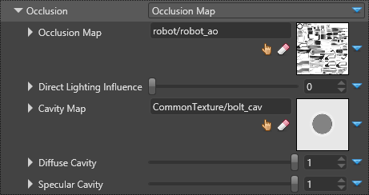
The screenshots below demonstrate the use of occlusion maps and cavity maps:
| Occlusion Map | Cavity Map | Final Composition |
|---|---|---|
| 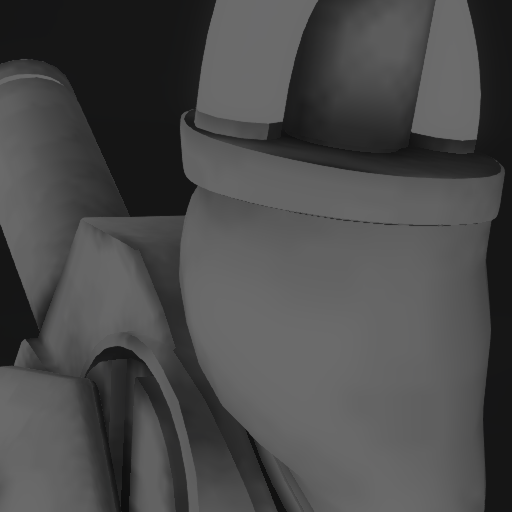 | 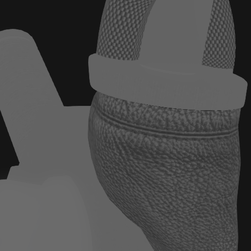 |  |
| Coarse occlusion of the ambient light | Fine-grained occlusion of direct light | Result |
| Property | Description |
|---|---|
| Occlusion Map | The occlusion map scalar provider that determines how much ambient light is accessible on the material. A value of 1.0 means that the material is fully lit by ambient lighting. A value of 0.0 means that the material is not lighted by the ambient lighting |
| Direct Lighting Influence | Applies to Occlusion Map and influences direct lighting |
| Cavity Map | The cavity map scalar provider is multiplied with direct lighting. It lets you define very fine grained cavity where direct light can't enter. The cavity map is usually defined for thin concave cavity |
| Diffuse Cavity | A factor for diffuse lighting influence of the cavity map. A value of 1.0 means the cavity map fully influences the diffuse lighting |
| Specular Cavity | A factor for specular lighting influence of the cavity map. A value of 1.0 means the cavity map fully influences the specular lighting |
Transparency
Under the Transparency properties, you can specify values that change the transparency of the material. You can coose Blend, Additive, or Cutoff.
Additive
The additive transparency takes into account the diffuse and diffuse/emissive alpha.
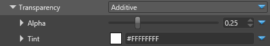
If the Alpha property is less than 0.5, only the specular highlights are visible. The material itself is completely invisible.
Alpha = 0.25 Alpha = 0.5 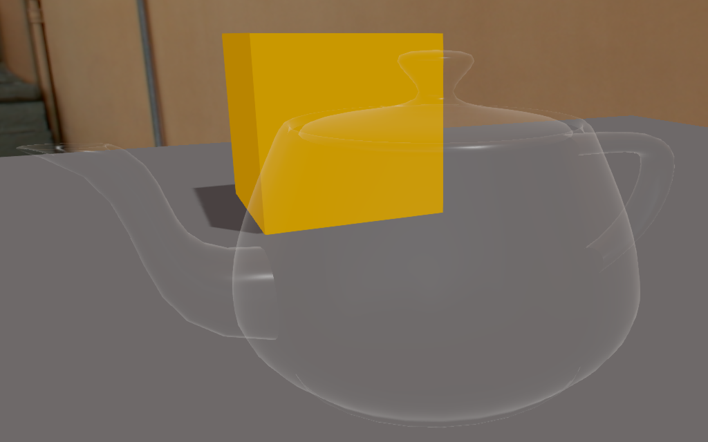 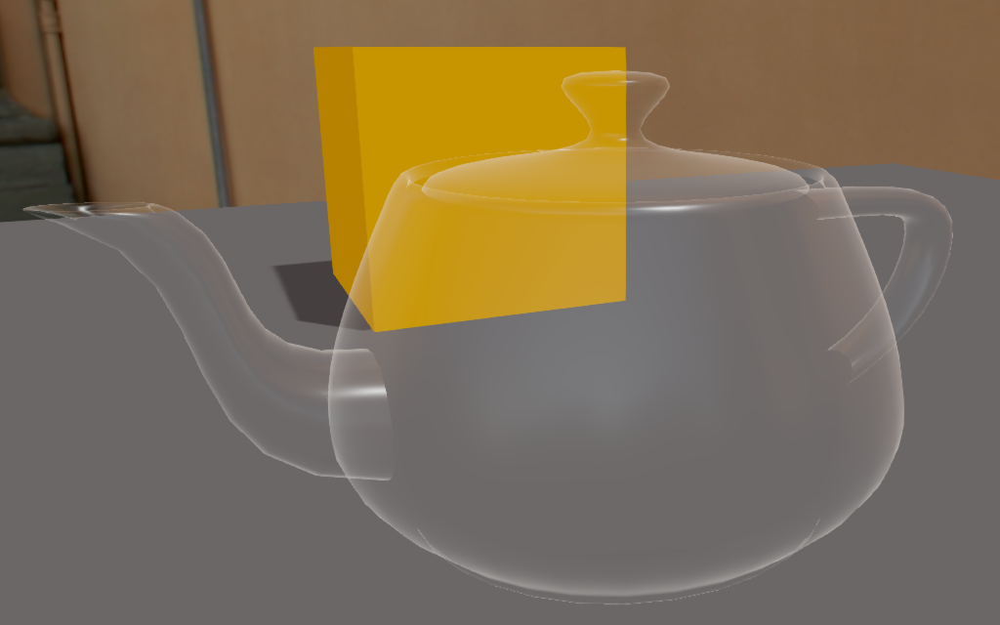 We only see the specular highlight in additive mode Transparency is fully additive. Specular highlights at maximum If the Alpha <= 1.0, the material is semi-opaque with the diffuse/emissive component. If the diffuse component has an alpha, it's transparent.
Alpha = 0.75 Alpha = 1.0 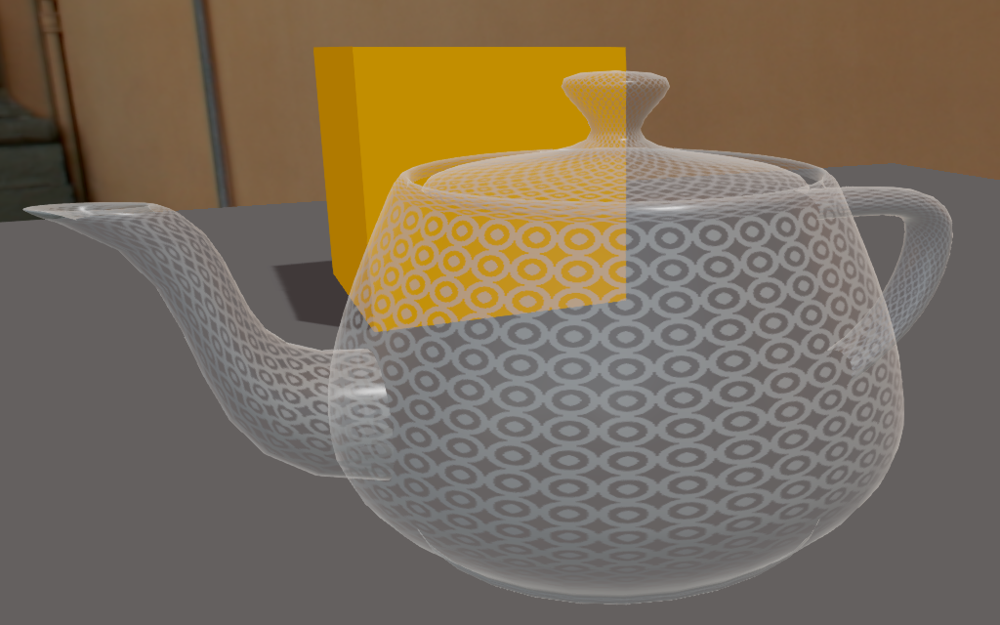 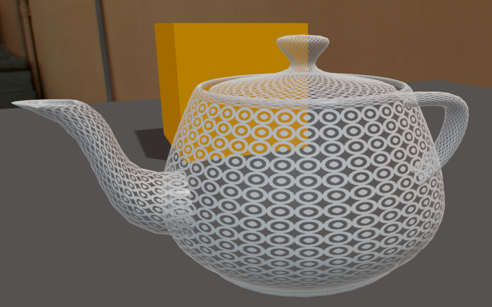 Specular highlights, diffuse with alpha and semi-opaque diffuse Specular highlights, diffuse with alpha and opaque diffuse
| Property | Description |
|---|---|
| Alpha | The alpha value is interpreted like this:
|
| Tint | Apply a color tint to the transparency layer |
Cuttoff
Renders a material when the current alpha color is above the threshold you specify with the Alpha slider.
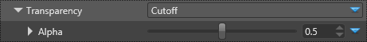
The following screenshots show the influence of the cutoff Alpha value.
| Alpha = 0.01 | Alpha = 0.5 | Alpha = 1.0 |
|---|---|---|
| 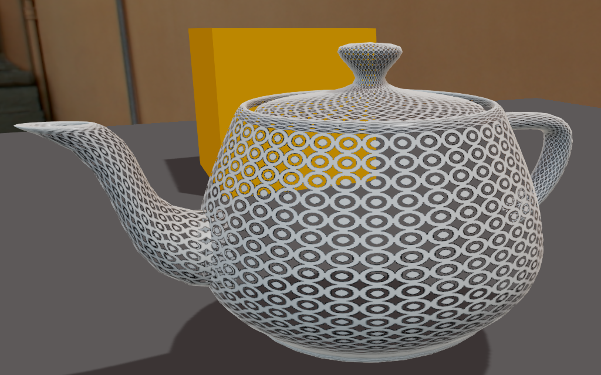 | 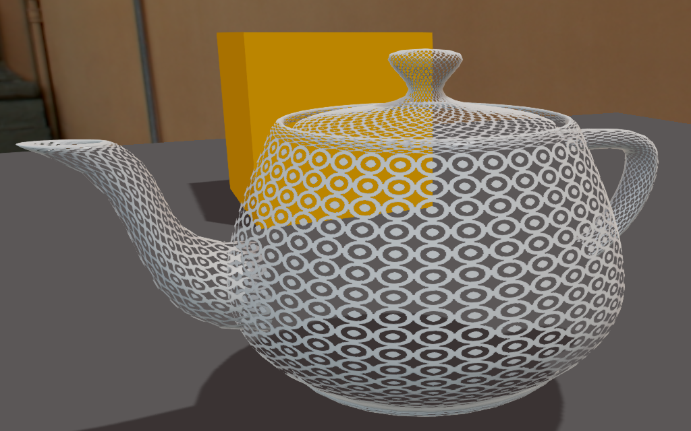 | 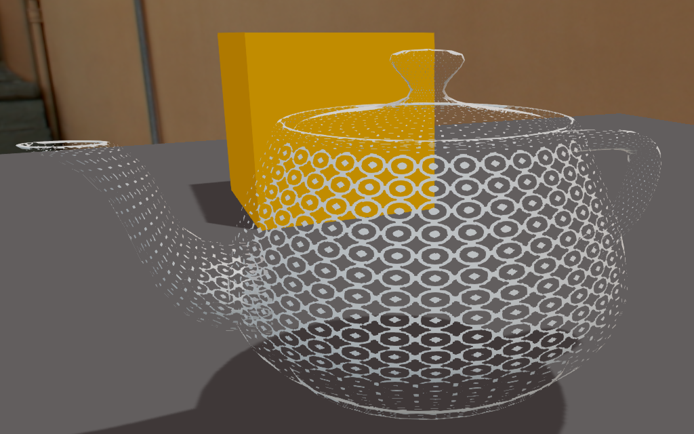 |
Clear coat
Clear-coat shading uses physically-based rendering to simulate vehicle paint.

For details, see clear-coat shading.